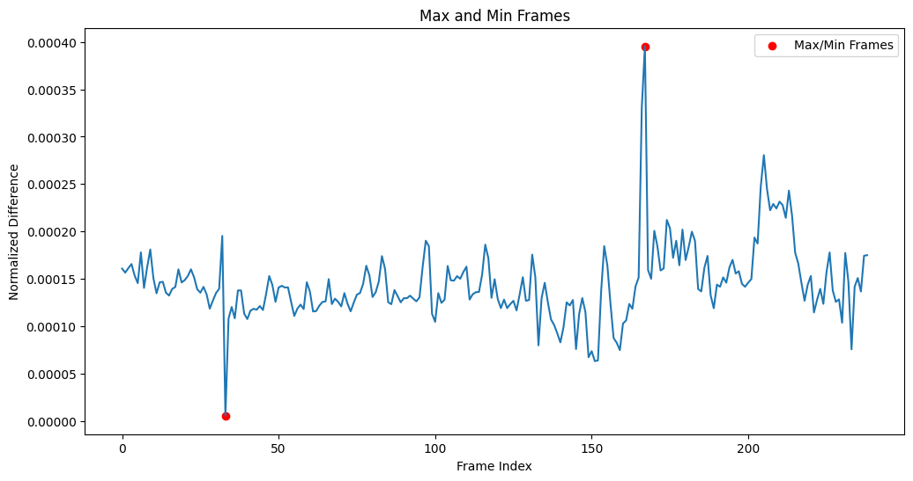

<!DOCTYPE html>
<html lang="en">
  <head>
    <meta charset="utf-8" />
    <meta name="viewport" content="width=device-width, initial-scale=1.0, maximum-scale=1.0, user-scalable=no" />

    <title>Geometries of Time</title>
    <link rel="stylesheet" href="dist/reveal.css" />
    <link rel="stylesheet" href="dist/theme/black.css" id="theme" />
    <link rel="stylesheet" href="plugin/highlight/zenburn.css" />
	<link rel="stylesheet" href="css/layout.css" />
	<link rel="stylesheet" href="plugin/customcontrols/style.css">


    <script defer src="dist/fontawesome/all.min.js"></script>

	<script type="text/javascript">
		var forgetPop = true;
		function onPopState(event) {
			if(forgetPop){
				forgetPop = false;
			} else {
				parent.postMessage(event.target.location.href, "app://obsidian.md");
			}
        }
		window.onpopstate = onPopState;
		window.onmessage = event => {
			if(event.data == "reload"){
				window.document.location.reload();
			}
			forgetPop = true;
		}

		function fitElements(){
			const itemsToFit = document.getElementsByClassName('fitText');
			for (const item in itemsToFit) {
				if (Object.hasOwnProperty.call(itemsToFit, item)) {
					var element = itemsToFit[item];
					fitElement(element,1, 1000);
					element.classList.remove('fitText');
				}
			}
		}

		function fitElement(element, start, end){

			let size = (end + start) / 2;
			element.style.fontSize = `${size}px`;

			if(Math.abs(start - end) < 1){
				while(element.scrollHeight > element.offsetHeight){
					size--;
					element.style.fontSize = `${size}px`;
				}
				return;
			}

			if(element.scrollHeight > element.offsetHeight){
				fitElement(element, start, size);
			} else {
				fitElement(element, size, end);
			}		
		}


		document.onreadystatechange = () => {
			fitElements();
			if (document.readyState === 'complete') {
				if (window.location.href.indexOf("?export") != -1){
					parent.postMessage(event.target.location.href, "app://obsidian.md");
				}
				if (window.location.href.indexOf("print-pdf") != -1){
					let stateCheck = setInterval(() => {
						clearInterval(stateCheck);
						window.print();
					}, 250);
				}
			}
	};


        </script>
  </head>
  <body>
    <div class="reveal">
      <div class="slides"><section  data-markdown><script type="text/template"><!-- .slide: class="drop" -->
<div class="" style="position: absolute; left: 0px; top: 0px; height: 1200px; width: 1920px; min-height: 1200px; display: flex; flex-direction: column; align-items: center; justify-content: center" absolute="true">

<section data-background-transition="zoom" data-background-video="https://github.com/chavezheras/slides/raw/main/assets/machine_vision_BG.mp4"
          data-background-video-loop data-background-video-muted data-background-opacity=.2>
          <aside class="notes">
          <p>Thank you to Maile and Patricia for the invitation and introduction.
And to the INstituto de filosofia da nova for hosting us this event.
I am delighted to be here.</p>
          </aside>
</section>

# Geometries of Time
## Complex Media Between Record and Prediction


[Dr Daniel Chávez Heras](https://movingpixel.net/)

[movingpixel.net ](https://movingpixel.net/) | [@chavezheras@sigmoid.social](https://sigmoid.social/@chavezheras)

Lisbon, October 2024
</div></script></section><section  data-markdown><script type="text/template"><!-- .slide: class="drop" -->
<div class="" style="position: absolute; left: 0px; top: 0px; height: 1200px; width: 1920px; min-height: 1200px; display: flex; flex-direction: column; align-items: center; justify-content: center" absolute="true">

<iframe width="1080" height="768" src="https://www.youtube.com/embed/CNIlqJctA_I?si=hassiNEby7XizlFS" title="YouTube video player" frameborder="0" allow="accelerometer; autoplay; clipboard-write; encrypted-media; gyroscope; picture-in-picture; web-share" referrerpolicy="strict-origin-when-cross-origin" allowfullscreen></iframe>
</div>

<aside class="notes"><p>Benjamin Desai is a creative technologist and digital artist focused on AR and cofounder of Radical Realities, an award-winning immersive studio.  “Excited to share this imaginative look into an alternate past powered by Sora. Blending early 20th-century film aesthetics with whimsical scenarios and placing animals in unexpected roles. This work aims to ignite a sense of wonder while showcasing the potential of today&#39;s technology. Creating with Sora is still an experimental process, involving a lot of iteration and fine-tuning. It&#39;s much more of a human-AI collaboration than a magic button solution. Check out these fascinating animals and the joy of asking &#39;what if?&#39;”</p>
</aside></script></section><section  data-markdown><script type="text/template"><!-- .slide: class="drop" -->
<div class="" style="position: absolute; left: 0px; top: 0px; height: 1200px; width: 1920px; min-height: 1200px; display: flex; flex-direction: column; align-items: center; justify-content: center" absolute="true">

<section data-background-transition="zoom" data-background-video="https://github.com/chavezheras/slides/raw/main/assets/machine_vision_BG.mp4" data-background-video-loop data-background-video-muted>

<h2><mark> · Time as record ·  </mark></h2>

<h2><mark> · Time as change ·   </mark></h2>

<h2><mark> · Time as space ·  </mark></h2>

  <aside class="notes">
<p> Lecture structure in three parts, or moments, each corresponding to a different emphasis in the conceptualisation of time and the study of media</p>
  </aside>

</section>
</div></script></section><section  data-markdown><script type="text/template"><!-- .slide: class="drop" -->
<div class="" style="position: absolute; left: 0px; top: 0px; height: 1200px; width: 1920px; min-height: 1200px; display: flex; flex-direction: column; align-items: center; justify-content: center" absolute="true">

<split even gap="3">


</split>
</div>

<aside class="notes"><p>In my book I focus on moving images: artefacts in and of motion that structure cognitive and affective responses in their audiences.</p>
<p>The first two moments: two chapter from my new book in which I discuss philosophies of time and temporal dynamics in moving images from a computational perspective. 
I will present a very condensed version the these chapters as a theoretical foundation, as well as ongoing research of how these concepts can be applied in practice.</p>
</aside></script></section><section  data-markdown><script type="text/template"><!-- .slide: class="has-dark-background drop" data-background-color="#304f5e" -->
<div class="" style="position: absolute; left: 0px; top: 0px; height: 1200px; width: 1920px; min-height: 1200px; display: flex; flex-direction: column; align-items: center; justify-content: center" absolute="true">

# One
## Time as record

<i class="far fa-clock fa-4x" ></i>
</div></script></section><section  data-markdown><script type="text/template"><!-- .slide: class="drop" -->
<div class="" style="position: absolute; left: 0px; top: 0px; height: 1200px; width: 1920px; min-height: 1200px; display: flex; flex-direction: column; align-items: center; justify-content: center" absolute="true">

## Media as Artefact
### Testimonies & Traces


</div>

<aside class="notes"><p>Mind independent conjecture about mechanical processes in Photography.
Gregory Currie (1999): we treat photographs as traces as opposed to testimonies. The former are counter-­factually dependant on nature, like a
footprint, in a way that the latter are not, like the tale of how I once took a step in the mud.</p>
<p>Time discrete ― Media as record</p>
<ul>
<li>The birth of Media Studies in Anglophone and Francophone academia in the 1960s.<ul>
<li>From communication studies</li>
<li>English and literary studies</li>
<li>Journalism and mass media</li>
</ul>
</li>
</ul>
</aside></script></section><section  data-markdown><script type="text/template"><!-- .slide: class="drop" -->
<div class="" style="position: absolute; left: 0px; top: 0px; height: 1200px; width: 1920px; min-height: 1200px; display: flex; flex-direction: column; align-items: center; justify-content: center" absolute="true">

### Formal analysis ➡️ stylometrics ➡️ macroanalysis
</div>

<aside class="notes"><ul>
<li>Epistemic traditions of material culture: mass media, originals and copies, psychology, cultural studies, audience studies, industry studies. <ul>
<li>The study of media artefacts and their interactions with audiences</li>
<li>In Film Studies: formal analysis of film style, film aesthetics, medium specificity theories in the philosophy of art.</li>
<li>Cultural analytics ― data science methods applied to the study of media artefacts, adapted to fit this paradigm: Distant Reading, Distant Viewing, Macroanalysis</li>
</ul>
</li>
</ul>
</aside></script></section><section  data-markdown><script type="text/template"><!-- .slide: class="drop" -->
<div class="" style="position: absolute; left: 0px; top: 0px; height: 1200px; width: 1920px; min-height: 1200px; display: flex; flex-direction: column; align-items: center; justify-content: center" absolute="true">

<i class="fas fa-quote-left fa-2x" ></i>


>One might expect the spectator to be overcome by a physical discomfort akin to sea-
sickness when watching a film that had been composed of different shots. [. . .] Yet 
everyone who goes to the movies knows that actually there is no sense of discomfort 
[. . .] If at one moment we see a long shot of a woman at the back of a room, and the 
next we see a close-up of her face, we simply feel that we have ‘turned over a page’ 
and are looking at a fresh picture.

<i class="fas fa-quote-right fa-2x" ></i>


\- Rudolph Arnheim, 1957
</div>

<aside class="notes"><p>Let me start with a basic question. Why is cinema not incredibly confusing?</p>
<p>In the well known-passage of <em>Film as Art</em> that you see on screen, Arnheim asks precisely why is it, that we are not we completely disoriented by this radical fragmentation of space and time. How do we parse this shattered temporality into a comprehensible whole that we can somehow relate to actual uninterrupted lived duration?</p>
<p>Films are made of a number of small and fragmented recordings, that when organised in a certain way make sense as a whole, and add up to a new kind of synthetic temporality. What we call <strong>cinematic time</strong>.</p>
</aside></script></section><section  data-markdown><script type="text/template"><!-- .slide: class="drop" -->
<div class="" style="position: absolute; left: 0px; top: 0px; height: 1200px; width: 1920px; min-height: 1200px; display: flex; flex-direction: column; align-items: center; justify-content: center" absolute="true">

<section data-background-video="https://github.com/chavezheras/slides/raw/main/assets/Grandmas_Reading_Glass_1900.mp4"
          data-background-video-loop data-background-video-muted>
    <aside class="notes">
          <p>One part of the answer is that this ability to watch films was learned over time. It was not always the case that we knew how to interpret a close up, for example. On screen you see one of the earliest recordings of a close ups in a film. 
		<p>_Grandma's Reading Glass_ (c.1900) by George Albert Smith.
		<p>At the time, the close up was a technical novelty. These early films are demonstrations of technology more than anything else. Through social exposure and continued use over time, techniques like the close up became formal conventions ― the pieces in a larger aesthetic apparatus of cinema.
     </aside>
</section>
</div></script></section><section  data-markdown><script type="text/template"><!-- .slide: class="drop" -->
<div class="" style="position: absolute; left: 0px; top: 0px; height: 1200px; width: 1920px; min-height: 1200px; display: flex; flex-direction: column; align-items: center; justify-content: center" absolute="true">


</div>

<aside class="notes"><p>Using computer vision, we can enlist computers to see these images in our behalf to find some of the patterns that emerge from conventional narrative techniques. For example the shot-reverse-shot, commonly used to depict conversations between characters. Using face detection, it is possible to get a sense of how cinematic discourse is constructed through editing: from wider shots that establish the relations between characters and their environment, progressively in...</p>
</aside></script></section><section  data-markdown><script type="text/template"><!-- .slide: class="drop" -->
<div class="" style="position: absolute; left: 0px; top: 0px; height: 1200px; width: 1920px; min-height: 1200px; display: flex; flex-direction: column; align-items: center; justify-content: center" absolute="true">


</div>

<aside class="notes"><p>...to close ups that show characters&#39; inner states, intentions, and reactions, through their facial expressions. David Bordwell calls this editing style from the general to the particular <em>analytical editing</em>.</p>
</aside></script></section><section  data-markdown><script type="text/template"><!-- .slide: class="drop" -->
<div class="" style="position: absolute; left: 0px; top: 0px; height: 1200px; width: 1920px; min-height: 1200px; display: flex; flex-direction: column; align-items: center; justify-content: center" absolute="true">


</div>

<aside class="notes"><p>By detecting faces, a basic ratio calculation between bounding boxes and frame size can be used as a proxy for shot scale, thus creating a shot scale detector, that can extend this computational exploration of film style to cover large collections of moving images, like film archives and online video platforms.</p>
</aside></script></section><section  data-markdown><script type="text/template"><!-- .slide: class="drop" -->
<div class="" style="position: absolute; left: 0px; top: 0px; height: 1200px; width: 1920px; min-height: 1200px; display: flex; flex-direction: column; align-items: center; justify-content: center" absolute="true">


</div>

<aside class="notes"><p>And this in turn opens the door to different kinds of statistical analysis along the lines of how stylometry is applied to text to perform distant reading of literary collections by essentially different forms of counting words in a corpus. On screen you see a breakdown by shot scale of a corpus of ~2700 clips of 350 popular Hollywood films, released between 1931 and 2019, from 287 unique directors.</p>
</aside></script></section><section  data-markdown><script type="text/template"><!-- .slide: class="drop" -->
<div class="" style="position: absolute; left: 0px; top: 0px; height: 1200px; width: 1920px; min-height: 1200px; display: flex; flex-direction: column; align-items: center; justify-content: center" absolute="true">

<iframe src="https://player.vimeo.com/video/602000956?badge=0&amp;autopause=0&amp;player_id=0&amp;app_id=58479" width="1920" height="1080" frameborder="0" allow="autoplay; fullscreen; picture-in-picture; clipboard-write" title="Big Angry Faces v.01"></iframe>
</div></script></section><section  data-markdown><script type="text/template"><!-- .slide: class="has-dark-background drop" data-background-color="#304f5e" -->
<div class="" style="position: absolute; left: 0px; top: 0px; height: 1200px; width: 1920px; min-height: 1200px; display: flex; flex-direction: column; align-items: center; justify-content: center" absolute="true">

# Two
## Time as Change

<i class="fas fa-hourglass-half fa-4x" ></i>
</div></script></section><section  data-markdown><script type="text/template"><!-- .slide: class="drop" -->
<div class="" style="position: absolute; left: 0px; top: 0px; height: 1200px; width: 1920px; min-height: 1200px; display: flex; flex-direction: column; align-items: center; justify-content: center" absolute="true">

## Media as Calculation
### Counting the invisible


</div>

<aside class="notes"><p>Bergson, Deleuze, Doanne
Hollis Frampton</p>
</aside></script></section><section  data-markdown><script type="text/template"><!-- .slide: class="drop" -->
<div class="" style="position: absolute; left: 0px; top: 0px; height: 1200px; width: 1920px; min-height: 1200px; display: flex; flex-direction: column; align-items: center; justify-content: center" absolute="true">

### Atomisation ➡️ Vectorisation ➡️ Compression
</div>

<aside class="notes"><p>Time as change --&gt; continuity, contiguity
Culture-2-Vec
Joint representational spaces</p>
</aside></script></section><section  data-markdown><script type="text/template"><!-- .slide: class="drop" -->
<div class="" style="position: absolute; left: 0px; top: 0px; height: 1200px; width: 1920px; min-height: 1200px; display: flex; flex-direction: column; align-items: center; justify-content: center" absolute="true">


</div>

<aside class="notes"><p>In the case of moving images, these relations are always relations of difference and similarity, and the range in between.</p>
<p>Films in particular elicit a peculiar hybrid modality of vision; this is I believe one of the 
main reasons for cinema&#39;s enduring erotic appeal. Films can fork time by splicing and (re)presenting discontinuous sequences of events at the level of shots. But each frame in every shot is tightly bound in a continuous sequence that is internally and mechanistically structured; frames cannot elude their strong bonds with each other without ceasing to be frames. We trust films as recordings of past duration because of the strong relations 
between frames.</p>
<p>I&#39;m going to show you a clip.</p>
</aside></script></section><section  data-markdown><script type="text/template"><!-- .slide: class="drop" -->
<div class="" style="position: absolute; left: 0px; top: 0px; height: 1200px; width: 1920px; min-height: 1200px; display: flex; flex-direction: column; align-items: center; justify-content: center" absolute="true">

<iframe src="https://player.vimeo.com/video/891638449?h=04f28f14e2&title=0&byline=0&portrait=0" width="1500" height="813" frameborder="0" allow="autoplay; fullscreen; picture-in-picture" allowfullscreen></iframe>
</div>

<aside class="notes"></aside></script></section><section  data-markdown><script type="text/template"><!-- .slide: class="drop" -->
<div class="" style="position: absolute; left: 0px; top: 0px; height: 1200px; width: 1920px; min-height: 1200px; display: flex; flex-direction: column; align-items: center; justify-content: center" absolute="true">


</div>

<aside class="notes"><p>per-frame difference time series</p>
</aside></script></section><section  data-markdown><script type="text/template"><!-- .slide: class="drop" -->
<div class="" style="position: absolute; left: 0px; top: 0px; height: 1200px; width: 1920px; min-height: 1200px; display: flex; flex-direction: column; align-items: center; justify-content: center" absolute="true">


</div>

<aside class="notes"><p>maximum and minimum differences between frames</p>
</aside></script></section><section  data-markdown><script type="text/template"><!-- .slide: class="drop" -->
<div class="" style="position: absolute; left: 0px; top: 0px; height: 1200px; width: 1920px; min-height: 1200px; display: flex; flex-direction: column; align-items: center; justify-content: center" absolute="true">

### Computational Burch


</div>

<aside class="notes"><p>Temporal structure in film is usually broken down analytically into sequences, scenes, and shots. These are units with which filmmakers and film editors design an intelligible whole from a pool of possible parts, most often recorded in various locations at separate times and in a different order.
Bong Joon-­Ho and Herzog</p>
<p>With a background in music, Burch classifies the ways in which a film can be edited by identifying all possible space-­time articulations that describe a minimal relation that exists between any two consecutive shots, like the ‘notes’ of a film.</p>
<p>A set of formal ‘objects’ – the fifteen different types of shot transitions and the
parameters that define ­them – capable of rigorous development through such devices as rhythmic alternation, recapitulation, retrogression, gradual elimination, cyclical repetition, and serial variation, thus creating structures similar to those of
twelve-­tone music. (Burch, 1981, p. 14)</p>
</aside></script></section><section  data-markdown><script type="text/template"><!-- .slide: class="drop" -->
<div class="" style="position: absolute; left: 0px; top: 0px; height: 1200px; width: 1920px; min-height: 1200px; display: flex; flex-direction: column; align-items: center; justify-content: center" absolute="true">


</div></script></section><section  data-markdown><script type="text/template"><!-- .slide: class="drop" -->
<div class="" style="position: absolute; left: 0px; top: 0px; height: 1200px; width: 1920px; min-height: 1200px; display: flex; flex-direction: column; align-items: center; justify-content: center" absolute="true">

<split even gap="3">


</split>
</div>

<aside class="notes"><p>difference in time and space articulations</p>
</aside></script></section><section  data-markdown><script type="text/template"><!-- .slide: class="drop" -->
<div class="" style="position: absolute; left: 0px; top: 0px; height: 1200px; width: 1920px; min-height: 1200px; display: flex; flex-direction: column; align-items: center; justify-content: center" absolute="true">


</div>

<aside class="notes"><p>At the same time, we admit film&#39;s capacity to dilate and compress time at the level of shots and sequences. The interplay between these two properties makes films both structured and elastic, mechanistically bound but expressively designed. </p>
<p>At this micro level, we can recognise at least two types of differences: strong higher but small differences between continuous frames, and weak but larger differences in contiguous shots. High frequency, small variation vs lower frequency and higher variation.</p>
<p>I&#39;m going to show you a clip</p>
</aside></script></section><section  data-markdown><script type="text/template"><!-- .slide: class="drop" -->
<div class="" style="position: absolute; left: 0px; top: 0px; height: 1200px; width: 1920px; min-height: 1200px; display: flex; flex-direction: column; align-items: center; justify-content: center" absolute="true">

<iframe src="https://player.vimeo.com/video/891639772?h=ca398e90d7&title=0&byline=0&portrait=0" width="1500" height="816" frameborder="0" allow="autoplay; fullscreen; picture-in-picture" allowfullscreen></iframe>
</div>

<aside class="notes"></aside></script></section><section  data-markdown><script type="text/template"><!-- .slide: class="drop" -->
<div class="" style="position: absolute; left: 0px; top: 0px; height: 1200px; width: 1920px; min-height: 1200px; display: flex; flex-direction: column; align-items: center; justify-content: center" absolute="true">


</div>

<aside class="notes"></aside></script></section><section  data-markdown><script type="text/template"><!-- .slide: class="drop" -->
<div class="" style="position: absolute; left: 0px; top: 0px; height: 1200px; width: 1920px; min-height: 1200px; display: flex; flex-direction: column; align-items: center; justify-content: center" absolute="true">


</div>

<aside class="notes"><p>These differences over time are perceived, interpreted, and felt, even if they are not consciously processed.</p>
<p>Is not that we &quot;see&quot; these images in our minds eye, but rather that these images can used a proxy to visualise perceptual change. A kind of computational phenomenology of moving images.</p>
</aside></script></section><section  data-markdown><script type="text/template"><!-- .slide: class="has-dark-background drop" data-background-color="#304f5e" -->
<div class="" style="position: absolute; left: 0px; top: 0px; height: 1200px; width: 1920px; min-height: 1200px; display: flex; flex-direction: column; align-items: center; justify-content: center" absolute="true">

# Three
## Time as Space

<i class="fas fa-braille fa-4x" ></i>
</div>

<aside class="notes"><p>complex in the complex systems meaning, as exhibiting complex behaviours and properties, namely, emergent properties: time doesn&#39;t exist as a discrete category, it arises as a psychological experience as a synthesis
Emergence
Physical shape of time
Topology of the network affects dynamics</p>
</aside></script></section><section  data-markdown><script type="text/template"><!-- .slide: class="drop" -->
<div class="" style="position: absolute; left: 0px; top: 0px; height: 1200px; width: 1920px; min-height: 1200px; display: flex; flex-direction: column; align-items: center; justify-content: center" absolute="true">

## Media as a Programming Language
### Finding the shape of time


</div>

<aside class="notes"><p>motion is not fragmented into a sequence of individual frames, but rather any one frame already contains the potential to release motion. The cinematic gives way to the datamatic, and datamatic time is not segmented and analysed, but predicted and synthesised.</p>
</aside></script></section><section  data-markdown><script type="text/template"><!-- .slide: class="drop" -->
<div class="" style="position: absolute; left: 0px; top: 0px; height: 1200px; width: 1920px; min-height: 1200px; display: flex; flex-direction: column; align-items: center; justify-content: center" absolute="true">

### Hierarchical Emergence ➡️ Topology ➡️ Structural Realism
</div>

<aside class="notes"><p>Complex media as in complex systems science:</p>
<ul>
<li>self organisation</li>
<li>complex behaviour emerges from simple rules</li>
<li>agent-based modelling</li>
<li>large-scale simulation
Inspired by physics (block time) and cellular biology (cellular automata)</li>
</ul>
</aside></script></section><section  data-markdown><script type="text/template"><!-- .slide: class="drop" -->
<div class="" style="position: absolute; left: 0px; top: 0px; height: 1200px; width: 1920px; min-height: 1200px; display: flex; flex-direction: column; align-items: center; justify-content: center" absolute="true">

<i class="fas fa-quote-left fa-2x" ></i>


>Editing a picture correctly, competently, means allowing the separate scenes and shots to come together spontaneously, for in a sense they edit themselves; they join up according to their own intrinsic pattern [. . .] Rhythm, then, is not the metrical sequence of pieces; what makes it is the time-thrust within frames. And I am convinced that it is rhythm and not editing, as people tend to think, that is the main formative element of cinema. 

<i class="fas fa-quote-right fa-2x" ></i>


\- Andrei Tarkovsky, 1989
</div>

<aside class="notes"><p>Soviet montage theorists, from Kuleshov to Pudovkin to Eisenstein, argued that that cinematic time is produced when filmmakers design an imagined relation between shots. And from this perspective, every shot presents the filmmaker with an opportunity to break and re-couple time and space in ways that create particular aesthetic effects. </p>
<p>Tarkovsky points to this strange notion of a film that edits itself, I think this is time as an emergent property, something that arises synthetically from tiny local differences into more complex structures.</p>
</aside></script></section><section  data-markdown><script type="text/template"><!-- .slide: class="drop" -->
<div class="" style="position: absolute; left: 0px; top: 0px; height: 1200px; width: 1920px; min-height: 1200px; display: flex; flex-direction: column; align-items: center; justify-content: center" absolute="true">

<section data-background-video="https://collection-space-navigator.github.io/static/videos/projection_compression2.mp4"
          data-background-video-loop data-background-video-muted>
    <aside class="notes">
          <p>CSN Collection space navigator, changing between multiple data projections.</p>
     </aside>
</section>
</div></script></section><section  data-markdown><script type="text/template"><!-- .slide: class="drop" -->
<div class="" style="position: absolute; left: 0px; top: 0px; height: 1200px; width: 1920px; min-height: 1200px; display: flex; flex-direction: column; align-items: center; justify-content: center" absolute="true">


</div></script></section><section  data-markdown><script type="text/template"><!-- .slide: class="drop" -->
<div class="" style="position: absolute; left: 0px; top: 0px; height: 1200px; width: 1920px; min-height: 1200px; display: flex; flex-direction: column; align-items: center; justify-content: center" absolute="true">


Image credit: [Ryan Heuser](https://www.cdh.cam.ac.uk/about/people/dr-ryan-heuser/)
</div></script></section><section  data-markdown><script type="text/template"><!-- .slide: class="drop" -->
<div class="" style="position: absolute; left: 0px; top: 0px; height: 1200px; width: 1920px; min-height: 1200px; display: flex; flex-direction: column; align-items: center; justify-content: center" absolute="true">


Image credit: [Ryan Heuser](https://www.cdh.cam.ac.uk/about/people/dr-ryan-heuser/)
</div></script></section><section  data-markdown><script type="text/template"><!-- .slide: class="drop" -->
<div class="" style="position: absolute; left: 0px; top: 0px; height: 1200px; width: 1920px; min-height: 1200px; display: flex; flex-direction: column; align-items: center; justify-content: center" absolute="true">


Image credit: [Ryan Heuser](https://www.cdh.cam.ac.uk/about/people/dr-ryan-heuser/)
</div></script></section><section  data-markdown><script type="text/template"><!-- .slide: class="drop" -->
<div class="" style="position: absolute; left: 0px; top: 0px; height: 1200px; width: 1920px; min-height: 1200px; display: flex; flex-direction: column; align-items: center; justify-content: center" absolute="true">


Image credit: [Ryan Heuser](https://www.cdh.cam.ac.uk/about/people/dr-ryan-heuser/)
</div></script></section><section  data-markdown><script type="text/template"><!-- .slide: class="drop" -->
<div class="" style="position: absolute; left: 0px; top: 0px; height: 1200px; width: 1920px; min-height: 1200px; display: flex; flex-direction: column; align-items: center; justify-content: center" absolute="true">

<section data-background-video="https://github.com/chavezheras/slides/raw/main/assets/gpu_anim_bg.mp4"
          data-background-video-loop data-background-video-muted>
          <h2 class="r-fit-text"><mark> · The many shapes of time · </mark></h2>
          <aside class="notes">
          <p> We know from physics that the shape of time is very different to our psychological experience of time. In special relativity time warps with space as an expression of gravity; quantum mechanics are time symmetrical, in quantum gravity theories time disappears altogether.  We also know that language plays a role in this experience, and that the way we speak and think about time is not universal, the Aymara is a tenseless language, and its speakers think of the past as in front of them and the future behind them.
          You are a “spacetime worm” that curves through the four-dimensional manifold known as spacetime.
          </aside>
</section>
</div></script></section><section  data-markdown><script type="text/template"><!-- .slide: class="has-dark-background drop" data-background-color="#304f5e" -->
<div class="" style="position: absolute; left: 0px; top: 0px; height: 1200px; width: 1920px; min-height: 1200px; display: flex; flex-direction: column; align-items: center; justify-content: center" absolute="true">

- A series and B series ― McTaggart
- Dynamic and static theories ― time flows or time is a block
- Presentism or Eternalism
- Three dimensions + change, or four dimensions + temporal parts
</div>

<aside class="notes"><p>B-theorists think all change can be described in before-after terms. They typically portray spacetime as a spread-out manifold with events occurring at different locations in the manifold. Living in a world of change means living in a world with variation in this manifold. To say that a certain autumn leaf changed color is just to say that the leaf is green in an earlier location of the manifold and red in a later location. The locations, in these cases, are specific times in the manifold. And all of the metaphysically important facts about change can be captured by tenseless propositions like “The leaf is red at October 7, 2019”. “The leaf is not red at September 7, 2019”.</p>
<p>To get an intuitive idea of what temporal parts are supposed to be, think of a film strip depicting you as you walk across a room. It is made up of many frames, and each frame shows you at a moment of time. Now picture cutting the frames, and stacking them, one on top of another. Finally, imagine turning the stack sideways, so that the two-dimensional images of you are all right-side-up. Each image of you in one of these frames represents a temporal part of you, in a specific position, at a particular location in space, at a single moment of time. And what you are, on this way of thinking, is the fusion of all these temporal parts.</p>
</aside></script></section><section  data-markdown><script type="text/template"><!-- .slide: class="drop" -->
<div class="" style="position: absolute; left: 0px; top: 0px; height: 1200px; width: 1920px; min-height: 1200px; display: flex; flex-direction: column; align-items: center; justify-content: center" absolute="true">

<iframe width="1080" height="768" src="https://www.youtube.com/embed/UWXbJah6RGs?si=YytmdjCrQj-7uOZP" title="YouTube video player" frameborder="0" allow="accelerometer; autoplay; clipboard-write; encrypted-media; gyroscope; picture-in-picture; web-share" referrerpolicy="strict-origin-when-cross-origin" allowfullscreen></iframe>
</div>

<aside class="notes"><p>Steven Schardt is a filmmaker and creative technologist, focusing on AI and its applications in arts and education.</p>
</aside></script></section></div>
    </div>

    <script src="dist/reveal.js"></script>

    <script src="plugin/markdown/markdown.js"></script>
    <script src="plugin/highlight/highlight.js"></script>
    <script src="plugin/zoom/zoom.js"></script>
    <script src="plugin/notes/notes.js"></script>
    <script src="plugin/math/math.js"></script>
	<script src="plugin/mermaid/mermaid.js"></script>
	<script src="plugin/chart/chart.min.js"></script>
	<script src="plugin/chart/plugin.js"></script>
	<script src="plugin/customcontrols/plugin.js"></script>

    <script>
      function extend() {
        var target = {};
        for (var i = 0; i < arguments.length; i++) {
          var source = arguments[i];
          for (var key in source) {
            if (source.hasOwnProperty(key)) {
              target[key] = source[key];
            }
          }
        }
        return target;
      }

	  function isLight(color) {
		let hex = color.replace('#', '');

		// convert #fff => #ffffff
		if(hex.length == 3){
			hex = `${hex[0]}${hex[0]}${hex[1]}${hex[1]}${hex[2]}${hex[2]}`;
		}

		const c_r = parseInt(hex.substr(0, 2), 16);
		const c_g = parseInt(hex.substr(2, 2), 16);
		const c_b = parseInt(hex.substr(4, 2), 16);
		const brightness = ((c_r * 299) + (c_g * 587) + (c_b * 114)) / 1000;
		return brightness > 155;
	}

	var bgColor = getComputedStyle(document.documentElement).getPropertyValue('--r-background-color').trim();
	var isLight = isLight(bgColor);

	if(isLight){
		document.body.classList.add('has-light-background');
	} else {
		document.body.classList.add('has-dark-background');
	}

      // default options to init reveal.js
      var defaultOptions = {
        controls: true,
        progress: true,
        history: true,
        center: true,
        transition: 'default', // none/fade/slide/convex/concave/zoom
        plugins: [
          RevealMarkdown,
          RevealHighlight,
          RevealZoom,
          RevealNotes,
          RevealMath.MathJax3,
		  RevealMermaid,
		  RevealChart,
		  RevealCustomControls,
        ],


    	allottedTime: 120 * 1000,

		mathjax3: {
			mathjax: 'plugin/math/mathjax/tex-mml-chtml.js',
		},
		markdown: {
		  gfm: true,
		  mangle: true,
		  pedantic: false,
		  smartLists: false,
		  smartypants: false,
		},

		mermaid: {
			theme: isLight ? 'default' : 'dark',
		},

		customcontrols: {
			controls: [
				{id: 'toggle-overview',
				title: 'Toggle overview (O)',
				icon: '<i class="fa fa-th"></i>',
				action: 'Reveal.toggleOverview();'
				},
			]
		},
      };

      // options from URL query string
      var queryOptions = Reveal().getQueryHash() || {};

      var options = extend(defaultOptions, {"width":1920,"height":1200,"margin":0,"controls":true,"progress":true,"slideNumber":true,"transition":"slide","transitionSpeed":"default"}, queryOptions);
    </script>

    <script>
      Reveal.initialize(options);
    </script>
  </body>

  <!-- created with Advanced Slides -->
</html>
